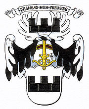
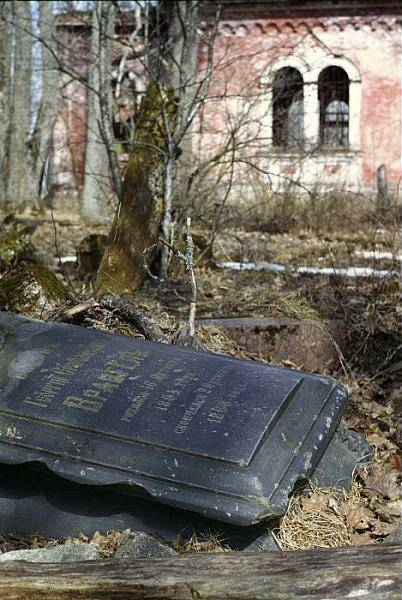
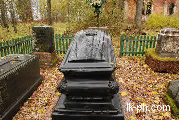

Есть в районе когда-то цветущее, а сегодня полностью заброшенное и изгаженное место - Раскулицы.
Тогда это был не Волосовский район, а Ямбургский уезд, но дела не меняет. Это бывшее имение баронов Корфов. Когда-то любовно ухоженное поместье с системой прудов, парком, усадьбой, многочисленными каменными хозяйственными постройками, храмом и кладбищем.
Фамилии на надгробьях те же, что в некрополе Александро-Невской лавры: Корфы, Врангели, Wolter, другие помещики округи.
И вот, году в 2005-м, какие-то люди привели кладбище в порядок, насколько это было возможным. Сделали все без огласки, тихо и скромно, не оставив следов своего участия. (Первое - до, ниже - после). Черное надгробие с баронским гербом - родного деда генерала Петра Врангеля.
Попытки узнать, кто же это сделал (привел в человеческий вид) успеха не принесли: какие-то, мол, бизнесмены. Спасибо этим людям. Лишь однажды услышал в этой связи имя тогдашнего главы муниципального образования "Волосовский район" Игоря Полянского.
Если действительно он принимал участие, будучи действующим чиновником и при этом никак не афишировал своего имени, можно смело относить поступок к необычному. Не припомню, чтобы добро делали втихаря.
Спасибо этим людям, избавили меня от стыда.
Самым примечательным представляется надгробие Е. Е. Врангеля.
На черной плите баронский герб с латинским девизом "Сломишь, но не согнешь". Ему и следовали.


Герой бравурной песни времен Гражданской:
"Белая Армия, черный барон..."
Родственник Пушкина Александра Сергеевича, однако. Даже смуглость черт передалась от пращура - Ибрагима Ганнибала.
Еще раз спасибо людям, приведшим в порядок надгробия.